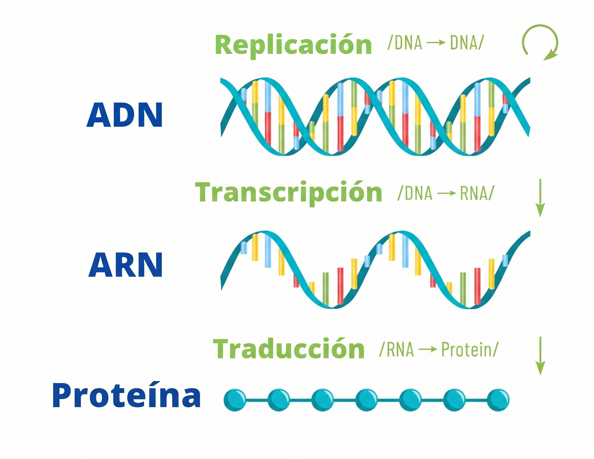

Simulador del Dogma Central de la Biología Molecular
Práctica 1 · Bioinformática
Simulación integrada del flujo de información genética celular en Python

Introducción y Objetivos
El Dogma Central de la Biología Molecular describe el flujo unidireccional de la información genética en los sistemas biológicos. Este proyecto implementa un simulador por consola interactivo, didáctico y modular para representar en tiempo real cada una de las fases moleculares:
flowchart LR
A["🧬 ADN (Molécula Original)"] -->|Replicación| B["🧬 ADN (2 moléculas hijas)"]
A -->|Transcripción| C["🌀 ARNm (Transcrito 5'→3')"]
C -->|Traducción| D["🏭 Proteína (Polipéptido maduro)"]Objetivos Clave de la Práctica
- Replicación Semiconservativa: Simular la apertura de la horquilla por la Helicasa, la síntesis continua en la cadena líder y la síntesis discontinua con fragmentos de Okazaki en la cadena rezagada, mediada por ARN Primasa, ADN Polimerasa I y III y ADN Ligasa.
- Transcripción de Alta Fidelidad: Diferenciar la cadena molde (\(3' \to 5'\)) de la cadena codificante (\(5' \to 3'\)), simulando la burbuja de transcripción y la sustitución de Timina por Uracilo en el ARNm.
- Traducción Ribosomal: Búsqueda del marco abierto de lectura a partir del codón AUG (Metionina), simulación de los sitios A, P y E del ribosoma y elongación de aminoácidos hasta encontrar codones de parada (Stop).
Arquitectura Modular del Código
| Archivo | Proceso Biológico | Enzimas y Elementos Clave |
|---|---|---|
replicacion.py |
Replicación Semiconservativa | Helicasa, Topoisomerasa, SSB, Primasa, ADN Pol III, ADN Pol I, Ligasa |
transcripcion.py |
Transcripción ADN \(\to\) ARNm | ARN Polimerasa, Promotor, Burbuja de transcripción, regla \(A \to U\) |
traduccion.py |
Traducción ARNm \(\to\) Proteína | Ribosoma (sitios A, P, E), ARNt con anticodón, Peptidil transferasa, Factor RF |
main.py |
Integrador y CLI | UI en tiempo real, modo paso a paso interactivo |
Inicio Rápido
Para poner en marcha el simulador interactivo en local: